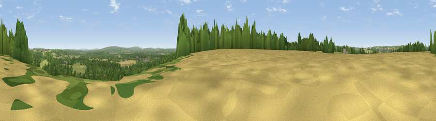

Viewpoint near East Worldham
#34264 in England · top 50% of its area beats it · near East WorldhamThe view, rendered

A 360° render of this exact spot computed from the terrain model, tree cover and land cover — summer colours, afternoon light, calibrated against photographs of famous viewpoints. Real trees, hedges and buildings will differ in detail.
The panorama
Grey silhouette: terrain skyline in each direction (720 bearings, Earth curvature and refraction included). Dashed green: skyline with trees (+15 m) and buildings (+8 m) as obstacles. Blue strip: how far the ground is visible on each bearing.
Where the view opens
Wedge length = distance to the farthest visible ground on that bearing (vegetation-aware). Rings at 10, 25 and 50 km.
What fills the view
52% woodland · 42% grassland · 5% cropland ·
Angular shares of the visible panorama (visual magnitude), not map area. Landscape diversity 0.40 (0–1 Shannon).
Key numbers
More beautiful places nearby
The staircase of upgrades: each row has a higher view potential than everything closer. Driving times are estimates from straight-line distance, calibrated against real road routing — check an actual route before setting out.
| Place | Direction | Drive | Score |
|---|---|---|---|
| Viewpoint near East Worldham | NNE · 0 km | ~2 min | 44.8 |
| Wick Hill | SSE · 1 km | ~4 min | 52.4 |
| Viewpoint near Selborne | SSW · 4 km | ~9 min | 52.7 |
| Viewpoint near Empshott | SSE · 5 km | ~11 min | 55.0 |
| Noar Hill | S · 5 km | ~11 min | 62.3 |
| Viewpoint near Steep | S · 10 km | ~19 min | 68.7 |
| Viewpoint near Buriton | SSW · 17 km | ~29 min | 75.3 |
| Viewpoint near Buriton | SSW · 17 km | ~29 min | 80.0 |
51.12610, -0.93155 · source: osm viewpoint · position refined by local search. Computed location — check access rights before visiting.